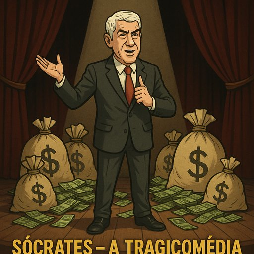

Publicado em 2025-06-29 17:37:11
Uma tragicomédia em atos, golpes e silêncios judiciais
Ato I – O Filho da Nação
Entra Sócrates, altivo, empoleirado nas escadarias do Parlamento.
Com um sorriso ensaiado e olhar de actor em telenovela venezuelana, declara:
“Vim para servir Portugal… e talvez também a mim próprio, com uma conta jeitosa em Paris.”
Os figurantes – jornalistas crédulos, banqueiros bajuladores, e empresários famintos – aplaudem de pé.
Ato II – O Benemérito da Troika
Em cena, uma tábua orçamental e três homens da troika, de lápis na mão e cenho franzido.
Sócrates, de braço dado com a dívida pública, apresenta-lhes o país hipotecado:
“Podem entrar. Está tudo em ordem. Excepto a justiça, o sistema fiscal, a banca e... a vergonha.”
Ato III – O Exílio Parisiense
Com o cenário a mudar para um loft em Paris e um armário recheado de fatos pagos com dinheiro sem recibo, o herói refugia-se no estrangeiro.
“É apenas uma pausa para reflexão… e para lavar, centrifugar e secar alguns fundos.”
Ato IV – O Regressado Maldito
Entra pela calada da noite, mas é recebido por um carro da PJ e um juiz com insónias.
O povo, entre estarrecido e pasmado, pergunta:
“Mas este não é aquele que dizia que era pobre, mas com estilo?”
Ato V – A Ópera do Ministério Público
O palco transforma-se num labirinto jurídico.
Sócrates tem 12 advogados, 8 contraditórios, 3 recursos e um motorista com mais contas que o BES.
“Isso não é meu, foi um amigo que me ofereceu uma fortuna só porque gosta muito de mim!”
Ato VI – O Mártir em Bruxelas
Num cenário europeu, Sócrates apresenta-se de toga e crucifixo nas mãos, queixando-se de perseguição, injustiça e azia.
“Portugal violou os meus direitos humanos! Onde já se viu acusar um político em democracia?”
Ato VII – A Nauseabunda Apoteose
O pano cai lentamente, mas o cheiro a impunidade permanece no ar.
No público, uns vomitam, outros adormecem. E outros, os mais cínicos, dizem:
“Ainda o vamos ver a comentar política na televisão. Ou pior… a voltar!”
Em Portugal, os verdadeiros palhaços não usam nariz vermelho. Usam gravata, têm bons advogados e gastam milhões que nunca foram deles. E no fim, ainda nos dizem com ar compungido que foram vítimas.
Artigo de Augustus Veritas
Uma tragicomédia, ao estilo de um teatro popular com cheiro a povo e sabor a verdade, encenado no palco lusitano dos absurdos. 🎭